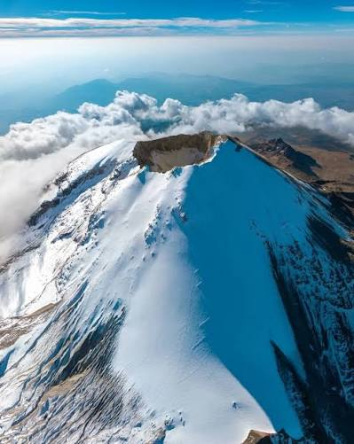
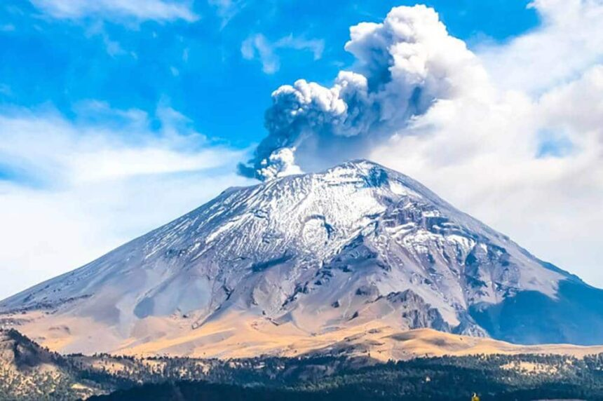
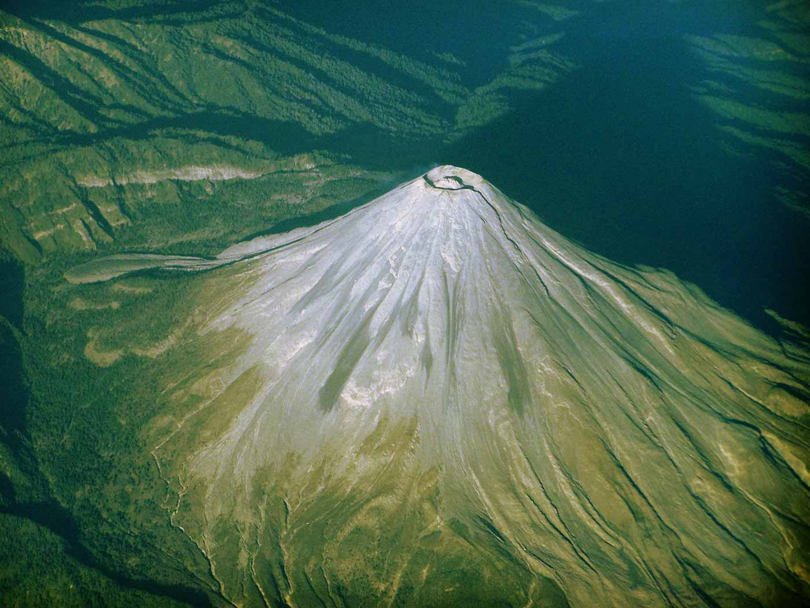

Un recorrido educativo e informativo sobre el Pico de Orizaba, el Popocatépetl y el Volcán de Colima.
México forma parte del cinturón tectónico conocido como el Cinturón de Fuego del Pacífico. De acuerdo con la información del Servicio Geológico Mexicano (SGM), la geografía de nuestro país se encuentra cruzada por la Faja Volcánica Transmexicana, una gran cadena volcánica de más de 900 km de longitud que alberga miles de estructuras y conos volcánicos.
A lo largo de la historia de México, estos colosos de la naturaleza han moldeado el paisaje, generado suelos sumamente fértiles para la agricultura y constituido fuentes clave de energía geotérmica y recursos minerales.
¿A qué se deben las erupciones?
En el suroeste de México, la Placa de Cocos choca constantemente y se desliza por debajo de la Placa Norteamericana (proceso llamado subducción). Este choque genera presiones extremas y funde la roca a decenas de kilómetros bajo tierra. Este material líquido (magma) acumula gases, pierde densidad y asciende a la superficie por las grietas terrestres, provocando una erupción.
¿Cada cuánto hay erupciones?
La frecuencia varía según el estado de actividad del volcán:

Ubicación: Entre los límites de Veracruz y Puebla.
Tamaño: 5,636 msnm.
Punto de comparación: Es el volcán más alto de México y la tercera montaña más alta de toda Norteamérica. Supera por más de 1.8 km al volcán Colima.
Peligrosidad: Actualmente se encuentra en reposo (durmiente), pero una erupción severa podría derretir sus glaciares, generando lahares (flujos destructivos de lodo y roca) a gran velocidad hacia las poblaciones colindantes.

Ubicación: Límites del Estado de México, Puebla y Morelos.
Tamaño: 5,420 msnm.
Punto de comparación: Es la segunda montaña más alta de México. Su cráter mide unos 800 metros de ancho, espacio suficiente para albergar la cancha del Estadio Azteca entera repetidas veces.
Peligrosidad: Extremadamente alta. Más de 25 millones de personas viven a menos de 100 km de distancia. Emite constantemente ceniza, lluvia de pómez, gases tóxicos y flujos piroclásticos.

Ubicación: Límites entre Colima y Jalisco.
Tamaño: 3,860 msnm.
Punto de comparación: Aunque es el más bajo de los tres (casi 1,800 metros más bajo que el Pico de Orizaba), es considerado uno de los más destructivos por su dinámica.
Peligrosidad: Históricamente es el volcán más activo y explosivo de México (ha tenido más de 40 erupciones registradas desde 1576). Genera derrames de lava, avalanchas de bloques incandescentes y columnas explosivas de ceniza.